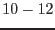

The task eexpmap uses the attitude file, the CAL vignetting information, and the exposure and bad pixel extensions of the photon event files to calculate an exposure map corresponding to the input image.
Creates a detector mask (values 0 or 1) based on exposure or exposure-gradient cutoff values. The detection tasks optionally use the mask to limit the detection to areas where the mask is 1.
eboxdetect (local mode):
In local mode, (parameter usemap=''no''), eboxdetect uses a 5x5 (or 3x3) pixel box and a surrounding (+2 pixels) background area to search for significant sources simultaneously in all input images.
esplinemap uses the source list from eboxdetect (local mode) to remove sources from the input images and creates smooth background maps by fitting a 2-D spline to the images. The parameter nsplinenodes determines the number of nodes per dimension. With nsplinenodes=16, esplinemap is able to model the approximate shape of large extended objects. This is necessary for the reliable detection of point sources. For the detection of extended objects (e.g. clusters of galaxies), it is recommended to use a smoother background map (nsplinenodes=).
From version 3.2 on, esplinemap can read an EPIC PN event set and calculate the background caused by out-of-time events (visible as streaks on both sides of bright sources in readout directions). This works only (and is only necessary) for PN images. This feature is switched on with the esplinemap parameter withootset=yes, parameter ooteventset specifies the name of the event set. The event set should have the same selections in TIME and FLAG as the esplinemap input image.
eboxdetect (map mode):
In map mode, (parameter usemap=''yes''), eboxdetect uses a 5x5 (or 3x3) pixel box and the values from the background map to search for significant sources simultaneously in all input images.
This task uses the output list from eboxdetect and determines parameters for each input source by means of a maximum likelihood fit to the input images. The fit is performed on a subimage around the source with the radius defined by eml_ecut.
Several source parameters can be set to define the source model:
- eml_fitextent determines whether a point source or an extent model (eml_extentmodel) convolved with the PSF is modelled.
- eml_nmulsou determines the maximum number of sources used to fit one input source.
- eml_nmaxfit is the maximum number of input sources which can be fitted simultaneously, if their positions are within a circle defined by eml_scut.
Since the fitting of extent models and multiple source models are CPU intensive, the following parameters can be used to limit the computation time:
- If flag eml_withtwostage is set and eml_nmulsou  , the fitting is
performed in two stages:
In the first run only one source model is fitted to the image. Only if this source is
significantly extended, a second fit with eml_nmulsou sources is performed.
, the fitting is
performed in two stages:
In the first run only one source model is fitted to the image. Only if this source is
significantly extended, a second fit with eml_nmulsou sources is performed.
- If flag eml_withthreshold is set, a threshold defined by eml_threshold is applied to the values in input column eml_threshcolumn. Only sources above the threshold are fitted with a multiple source model (maximum number eml_nmulsou).
From the likelihood of the best fit and the likelihood of the NULL model (source count rate zero) a detection likelihood is calculated (see the documentation of emldetect for details). If the detection likelihood exceeds the threshold set by likemin, the source is written to the final source list (eml_list).
For each input image esensmap calculates a sensitivity map in units of counts/sec for a likelihood threshold given by the parameter esen_mlmin.